安装
节点机上安装
前置条件
修改pip.conf配置，改为网易的源。
1
2
3
|
[global]
index-url = https://pypi.cloud.netease.com/jenkins/dev
trusted-host = pypi.cloud.netease.com
|
初始化一个virtualenv环境
clone proton-tempest-plugin 这个项目。
安装这个项目的依赖。
1
|
pip install -r requirements.txt
|
初始化tempest-home
1
|
cd ~ ; mkdir tempest-home && cd tempest-home && tempest init
|
拷贝联调环境的配置文件到 ~/tempest-home/etc/
运行测试用例
1
|
stestr run proton_tempest_plugin.tests.api.test_fixed_ips.FixedIpTest.test_create_delete_fixed_ip_specify_cidr
|
运行所有测试用例
1
|
stestr run proton_tempest_plugin.tests.api
|
云主机上安装
云主机上没法直接使用公司的pip源，需要使用阿里源
1
2
3
4
5
|
(my_new_env) root@test-neutron:~# cat .pip/pip.conf
[global]
index-url = http://mirrors.aliyun.com/pypi/simple/
trusted-host = mirrors.aliyun.com
|
初始化一个virtualenv环境
clone proton-tempest-plugin 这个项目。
安装这个项目的依赖。
1
|
pip install -r requirements.txt
|
tempest这个包需要直接下载下来，传到云主机上去。
1
|
wget https://pypi.cloud.netease.com/jenkins/dev/+f/c61/f64aa31bf75ea/tempest-0.0.1.dev8798.tar.gz#sha256=c61f64aa31bf75ea5054d8ec2484b4a68d214925f8fc7c43bc12957cbb3cf5c2
|
手动安装一下
1
|
pip install tempest-0.0.1.dev8798.tar.gz
|
初始化tempest-home
1
|
cd ~ ; mkdir tempest-home && cd tempest-home && tempest init
|
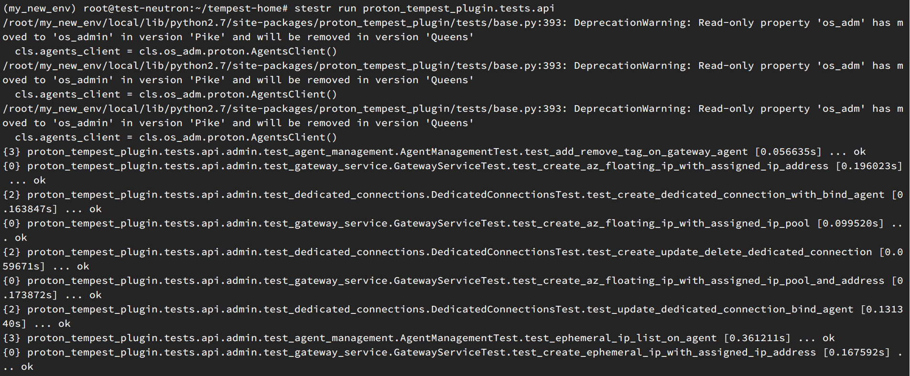
执行结果
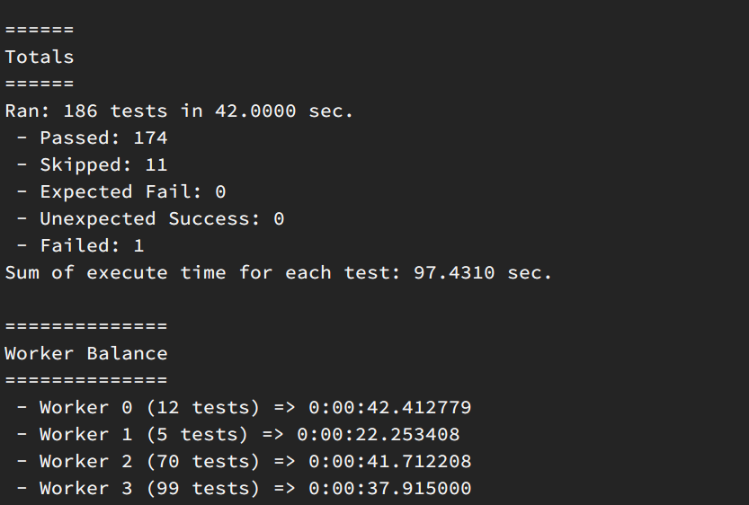
调试
配置远端解释器
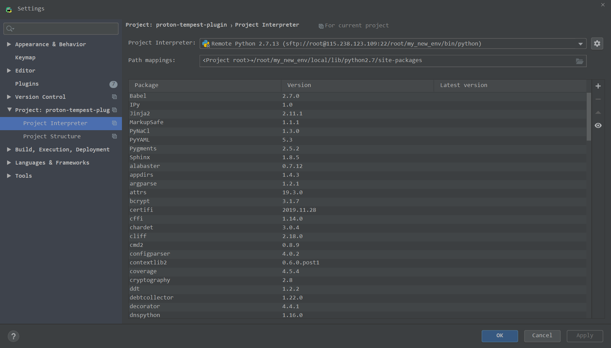
设置同步文件夹
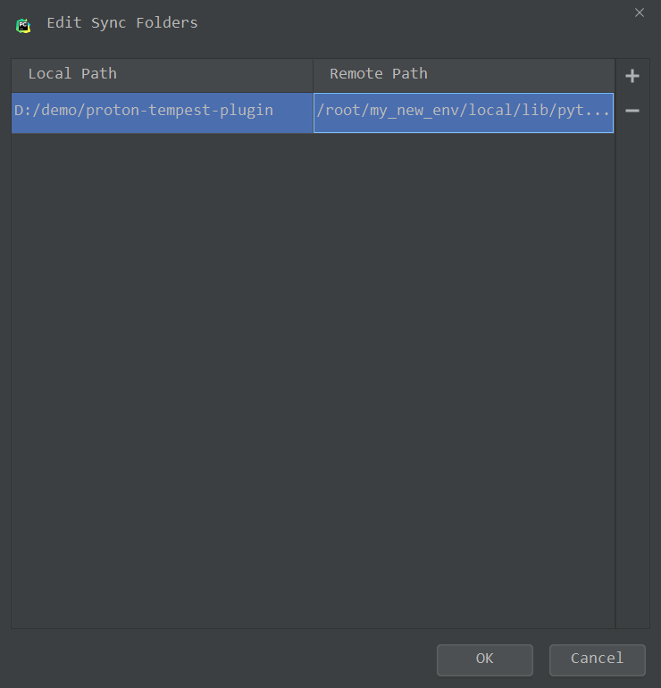
deployment里面设置为
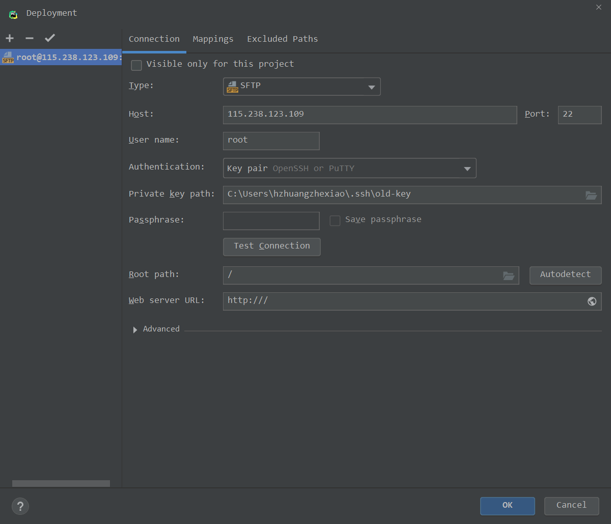
mappings
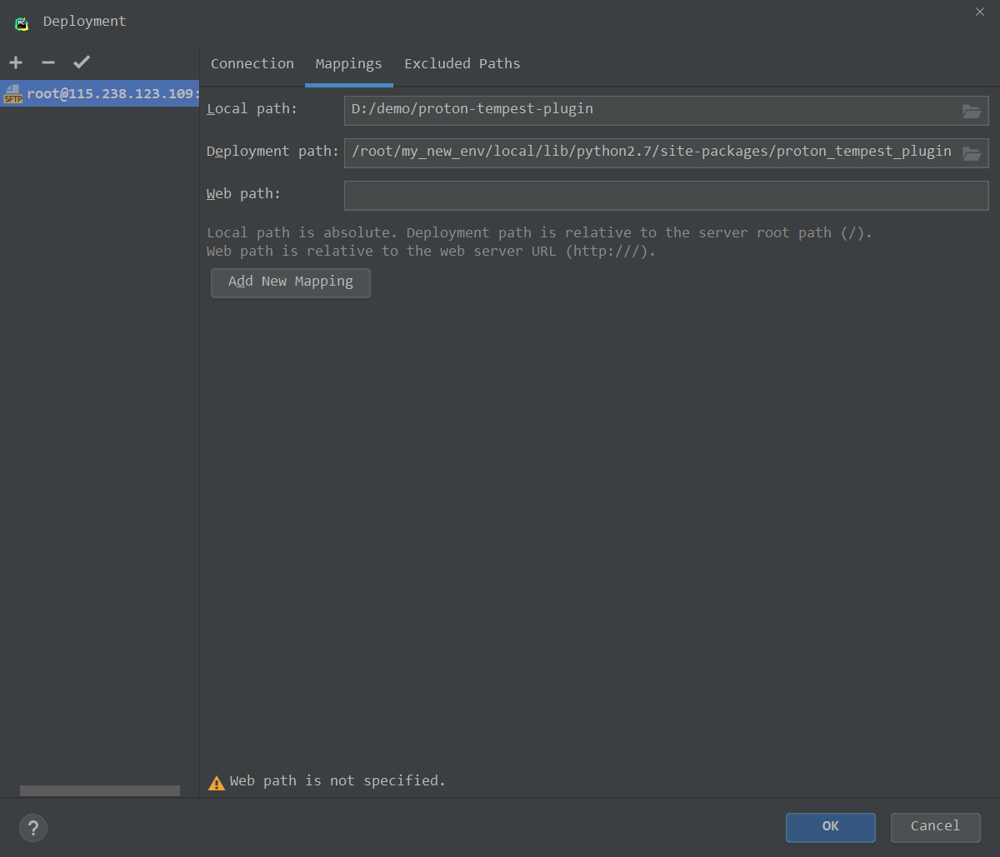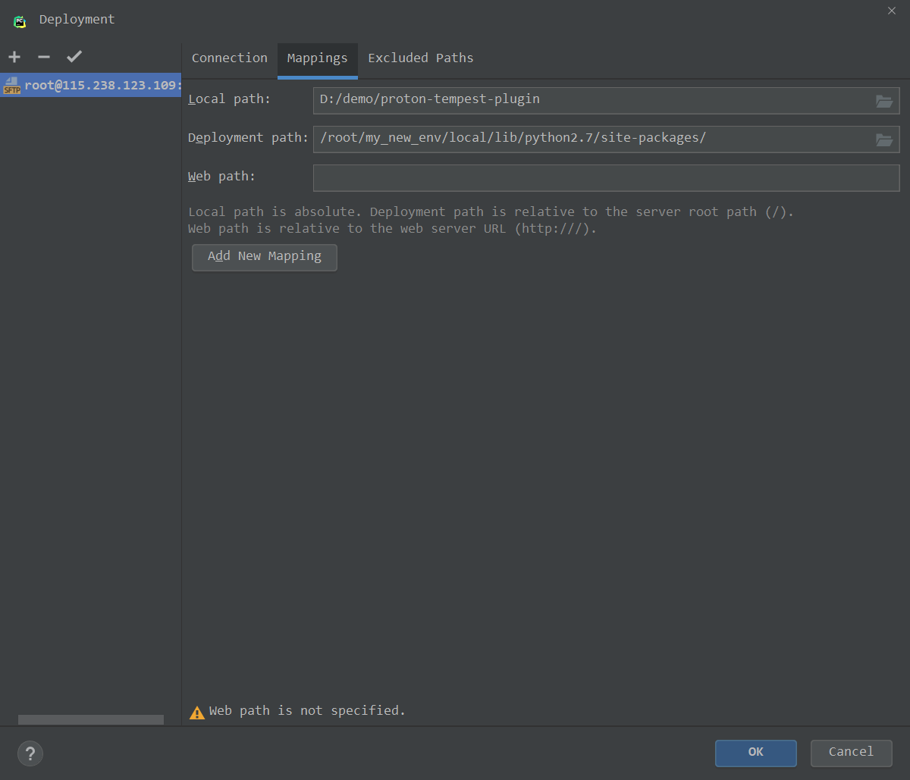
这些因为前面都设置好了，不用改即可。
配置好自动上传之后
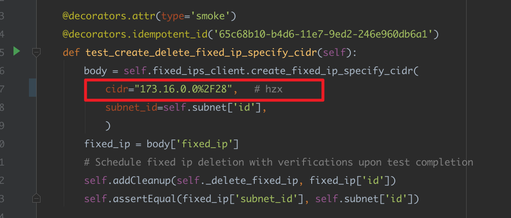
能够自动更新文件即ok
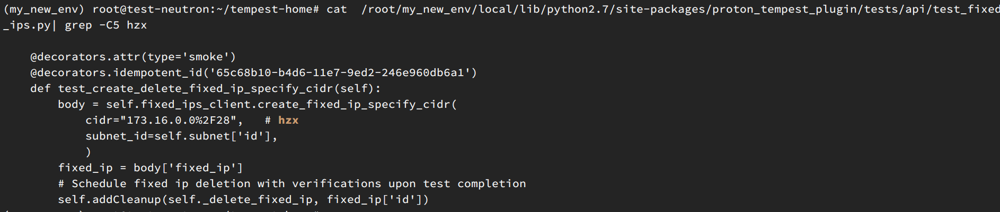
stestr
我们在节点机上执行命令
1
|
stestr run proton_tempest_plugin.tests.api.test_fixed_ips.FixedIpTest.test_create_delete_fixed_ip_specify_cidr
|
查询stestr入口
1
2
|
(my_new_env) root@test-neutron:~/tempest-home# which stestr
/root/my_new_env/bin/stestr
|
可以看到stestr就是一个Python脚本
1
2
3
4
5
6
7
8
9
10
11
12
|
(my_new_env) root@test-neutron:~/tempest-home# cat /root/my_new_env/bin/stestr
#!/root/my_new_env/bin/python2
# -*- coding: utf-8 -*-
import re
import sys
from stestr.cli import main
if __name__ == '__main__':
sys.argv[0] = re.sub(r'(-script\.pyw|\.exe)?$', '', sys.argv[0])
sys.exit(main())
|
等价于（需要在~/tempest-home 目录下）
1
|
python /root/my_new_env/bin/stestr run proton_tempest_plugin.tests.api.test_fixed_ips.FixedIpTest.test_create_delete_fixed_ip_specify_cidr
|
使用pytest
1
|
pip install pytest==3.6.4
|
运行效果如下
1
|
pytest --pyargs proton_tempest_plugin.tests.api
|
运行结果
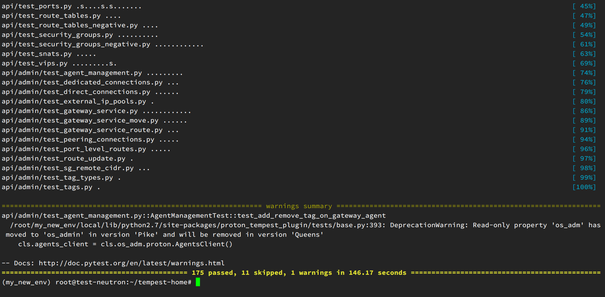
运行指定用例
pytest –pyargs proton_tempest_plugin.tests.api.test_fixed_ips.py::FixedIpTest::test_create_delete_fixed_ip_specify_cidr
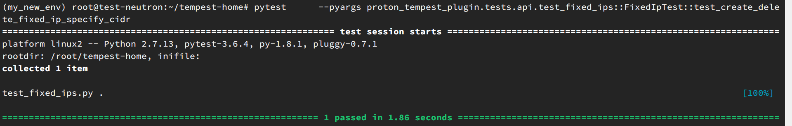
或者使用 -k参数
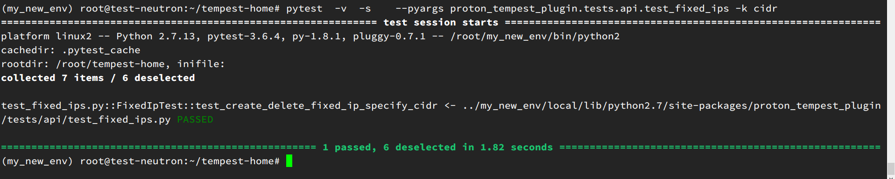
pytest 有一个 –debug参数，你可以看到为啥执行失败。
pytest –debug –rootdir=/root -v -s –pyargs proton_tempest_plugin.tests.api.test_fixed_ips::FixedIpTest::test_create_delete_fixed_ip_specify_cidr
这边可以看到执行的路径
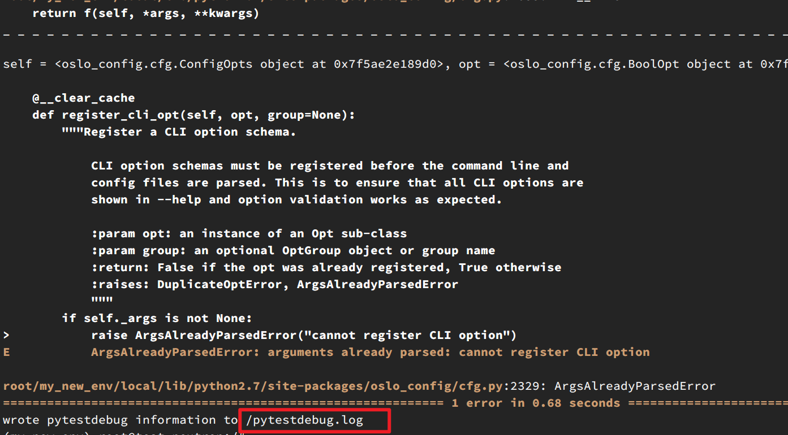
主要是因为tempest proton plugin run的时候需要路径下面有 etc 和logs 目录。我们自己手动建好，然后配置一下路径映射。（或者直接映射到tempest-home目录下）
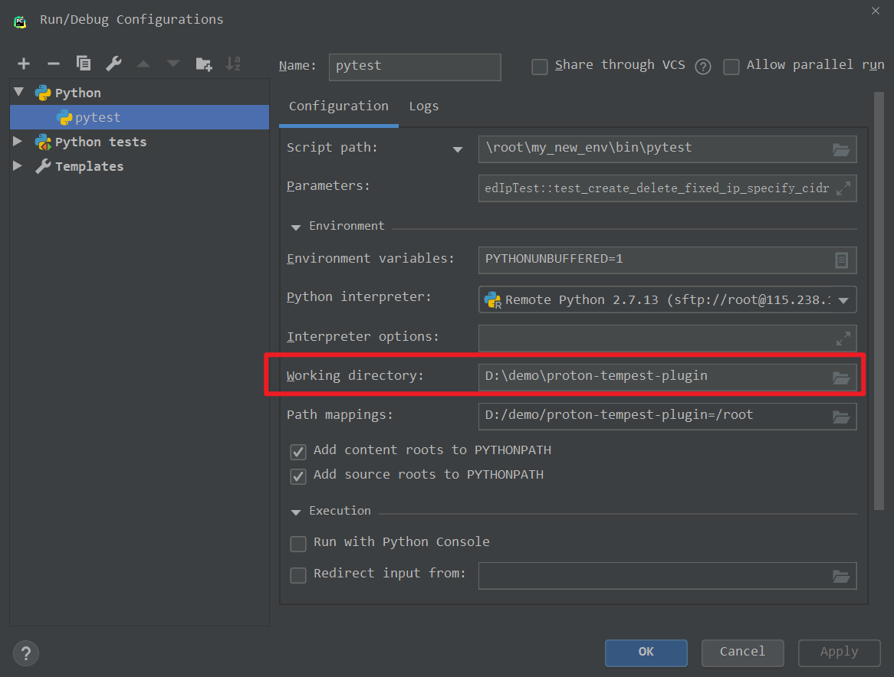
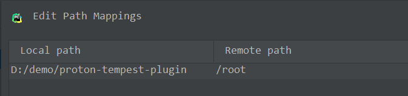
这样就可以使用远程解释器执行成功了
1
2
3
|
script path ： \root\my_new_env\bin\pytest
参数 ： --debug --rootdir=/root --pyargs proton_tempest_plugin.tests.api.test_fixed_ips -k cidr
|
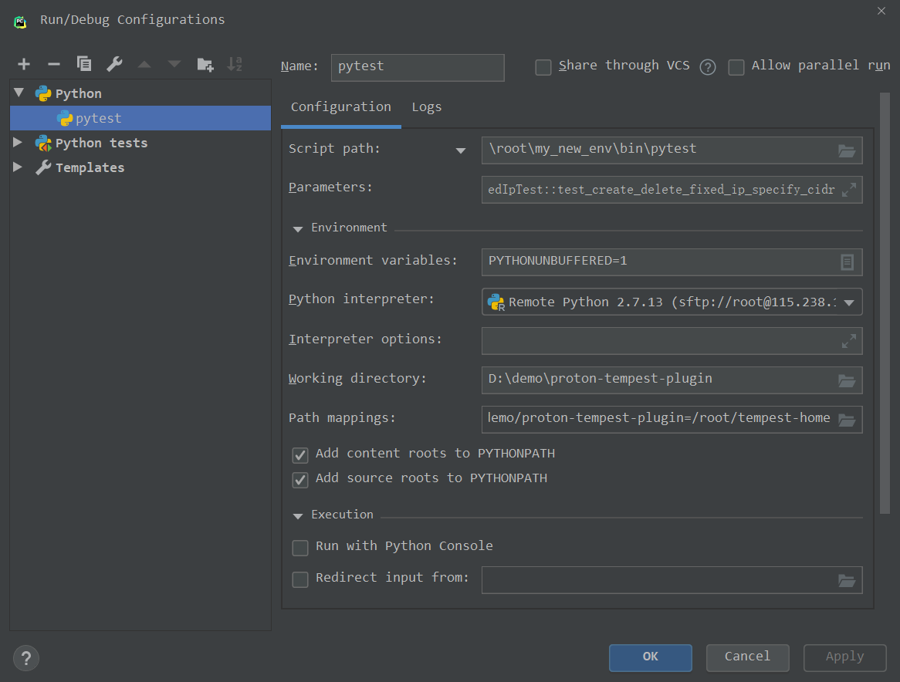
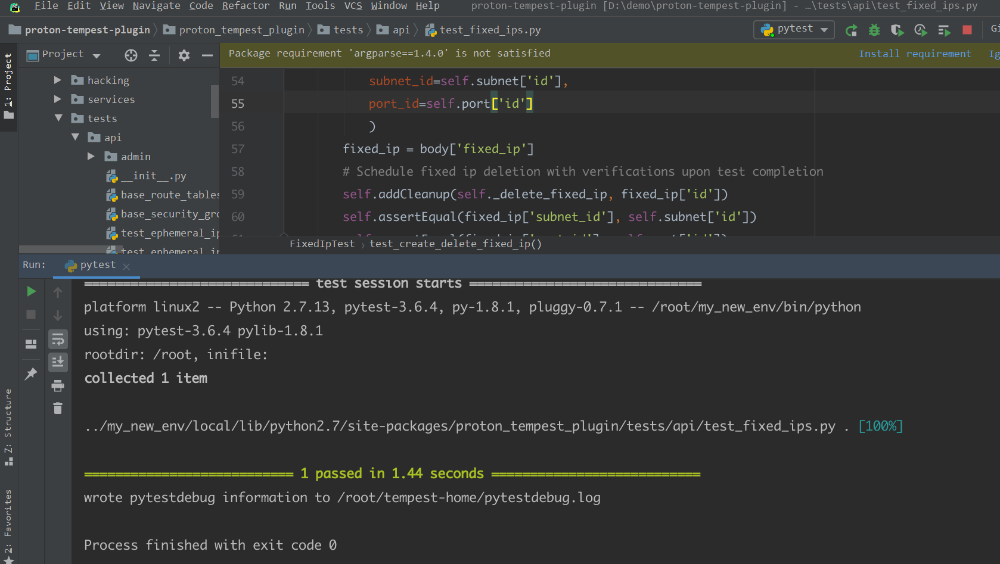
远程调试
如果需要使用远程调试的话，重新定义working dir。当前文件夹映射到 tempest-home 。
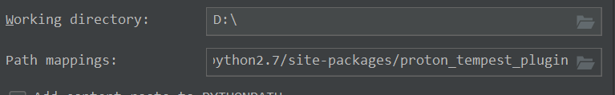
Python测试文件需要一一对应，这样断点才能生效。
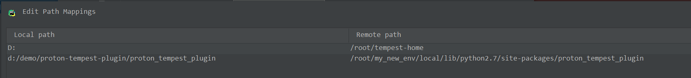
现在可以看到断点生效了。
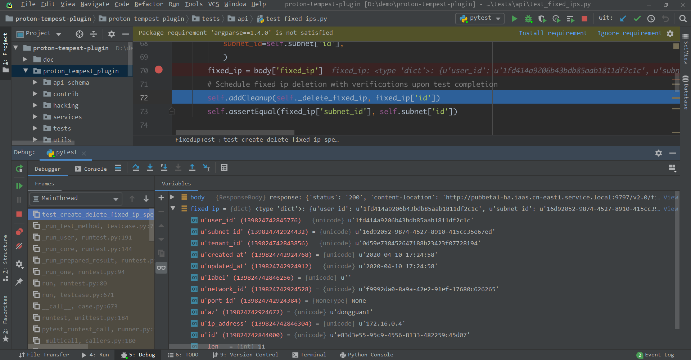